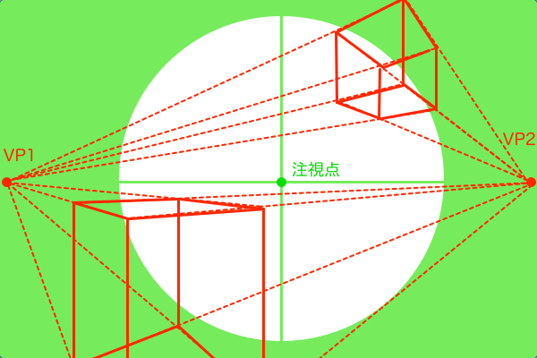

視円錐は様々なパース理論の根底にある概念です。消失点の位置決め、画角の設定、パーステンプレート作成など、視円錐の応用は多岐に渡ります。パース作画において、本来なら視円錐は空間の基準として1つだけ使われますが、お絵描きホーホー論では「空間の視円錐」と「視界の視円錐」という2つの視円錐を使い分ける方法を提唱します。
2つの視円錐とは
空間の視円錐とは、パース作画のための基準です。基本的には観察者に対して45度傾いた状態の立方体の消失点を両端に据えた視円錐です。空間の視円錐の中心点のことは「視心」と呼びます。

視界の視円錐とは、空間の視円錐から絵にする領域を切り取るための基準です。切り取る大きさは観測者の意識の仕方によって変化します。つまり、観察者が何をどのくらい意識して見ているかによって認識できる範囲が変化し、画面を切り取る大きさが変わると言うことです。逆に言うと観客に何をどれくらい意識して見せたいかと言うことになります。視界の視円錐の中心点のことは「注視点」と呼びます。


この2つの視円錐を併用するときに「注視点」という概念が重要となります。順を追って解説します。まず、空間の視円錐の頂点（SP）には観測者が立っていて、そこから見た風景が絵となります。ところが、1つの視円錐のみを使用してパース作画した場合、視円錐の底面（PP）の中心点（視心）、つまり遥か遠方の地平線（アイレベル）を真っすぐ見たときの風景しか描けません。要するに、建築パースの二点透視図法で描かれた絵になるということです。このままでは観測者の意思は存在していませんので、空間の視円錐のどの部分を注目するかという意思を与えます。そのとき注目したい部分に置くのが注視点です。注視点は観測者が注目する点なので、空間の視円錐の中の好きなところに置くことができます。アイレベルより上側でも下側でも、観測者が首を回すのと同じように注目できます。観測者が注目するのは必然的に視界の中心となるので、視界の視円錐の中心点は注視点ということになります。
下図は実際に空間の視円錐と、視界の視円錐で見た風景の比較をしています。円の内側が観測者が認識している範囲となります。2番目の図では、視界の視円錐の視野を絞ると望遠パースのなるので、消失点VP1とVP2は画面外の遥か遠くに設定しています。



空間を視界で切り取る画面レイアウトの考え方
透視図法で立方体を作図する手順は建築パースを徹底研究！パース理論の基礎知識と描き方の記事で解説しています。また、画面を切り取るパース作画については一瞬で背景イラストのアングルと画角を決めるパースの描き方の記事で解説しています。ただ、それらの2つの記事はそれぞれ情報不足な部分があります。
前者については、建築パース理論をお絵描きに応用する方法に触れていません。後者については、上で述べた通り、観測者が地平線を見ているという前提でしか風景が描けません。つまり、現段階では建築パースの二点透視図法でしかパース作図ができないということです。このような縦パースを省略した無機質な二点透視の絵では面白くありません。そこで2つの視円錐の登場です。空間の視円錐はこれまで勉強してきた視円錐と全く同じ扱いで良いので、今回の記事では視界の視円錐のみについて解説していきます。
視界の視円錐は、「観測者」が注目している範囲の風景を切り取る道具のようなものです。また、観測者が切り取ろうとしている風景は、空間の視円錐で作図された風景です。そして、空間の視円錐で作図する風景は、「観測者」が視心を注目しているときに見える風景から縦パースを省略した二点透視図法です。すると、視界の視円錐と、空間の視円錐における観測者の立ち位置（SP）は一致していないといけません。2つの視円錐を使うにあたって前提となるのはこれだけです。では空間の視円錐の世界を、視界の視円錐で覗いた上図の3つ（黒・青・緑の図）を観察してみて下さい。
なんというか、特にこれまで描いてきた風景との違いは発見できません。それはそのはずです。今覗いた空間は立体の縦パースを省略した二点透視図法で描かれているので、それは現実で観測者が見ている風景としてはあり得ない歪み方をしていることになります。ここまでの説明は視円錐を使って考える望遠パース・広角パースの描き方の記事で説明していたことで、今回の記事ではそれでは不十分だということになります。ここで、二点透視図法に縦パースを取り入れて三点透視図法にしましょう。その縦パースを取り入れる過程をに簡単に解説します。
まず、パース理論にはアイレベルという概念があり、二点透視図法の消失点はアイレベル上に存在します。このままでは立体の横パースはアイレベル上の2つの消失点に収束しますが、縦パースは省略されたままで立体の縦方向は垂直線で作図されます。縦パースを取り入れるなら、アイレベルより上側の風景は上側にパースが縮小し、下側の風景だとその逆になります。
ここまでの話をまとめると、視界の視円錐は二点透視の空間に縦パースを加えて三点透視の絵にするフィルターのようなものです。それでは実際に「空間の視円錐」の風景を「視界の視円錐」で切り取ってみましょう。
やることは単純です。空間の視円錐の底面に作図された風景から絵にしたい部分を切り取ります。次に、切り取ったフレームが空間の視円錐の底面のどのあたりの位置にあるかによって、三点透視の縦パースの方向を決めます。

残る課題
一応これで観察者が実際に見ている三点透視図法の風景は作図できます。しかし、まだ縦パースの縮小具合の決め方については触れていません。つまり、二点透視図法の画角と同じ概念を三点透視図法の縦パースにも適用すると、どれくらいパースは歪むのか説明していないということです。以前書いた建築パース理論補講 〜2点透視を2つ重ねると3点透視になる〜の記事では、三点透視は2つの二点透視を組み合わせたものだと言いましたが、それは単に見た目がそうなっているというだけの話で、画角の設定をどうするかの判断基準にはなりません。というわけで、三点透視図法の縦パースの画角については次回のパース講座にて解説しようと思います。